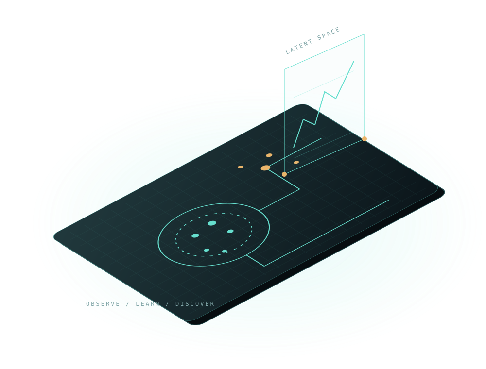

Making knowledge
discoverable.
Built enterprise retrieval pipelines that connect complex documents with the people who need answers. Combining multimodal understanding, hybrid search, and re-ranking.
RETRIEVAL · MULTIMODAL AI · RAGDATA SCIENTIST AT MICROSOFT
I'm Kartheek. I turn complex data into useful intelligence.
And sometimes, I trade the code for a camera.

01 / OBSERVE02 / FIND STRUCTURE03 / CONNECT IDEAS01 / THE PLAYGROUND
Intelligence starts with a pattern.
Here's a tiny experiment you can actually play with.
Add observations by clicking the plot, or use the keyboard-friendly button. Then let the centroids find their place.
Enable JavaScript to run this local educational experiment.
Anatomy of a retrieval-augmented generation pipeline. Pick a stage to peek inside.
Start with source material. Our synthetic notebook says: “The observatory opens after sunset.” No personal documents are used.
A visual explanation, not a live LLM. No uploads, credentials, or external inference.
02 / APPLIED INTELLIGENCE
A few themes from my work across research
and industry. Built with people, for people.
Built enterprise retrieval pipelines that connect complex documents with the people who need answers. Combining multimodal understanding, hybrid search, and re-ranking.
RETRIEVAL · MULTIMODAL AI · RAGLed document-classification solutions for regulatory relevance, using metadata and fine-tuned language models to make compliance review more focused.
NLP · TRANSFORMERS · CLASSIFICATIONDeveloped domain-specific sentence similarity and vector search to surface related software defects, helping teams reconnect with solutions already discovered.
METRIC LEARNING · SEMANTIC SEARCHApplied machine learning to PCB layout exploration and ultrasound-based air-leak detection, bridging unstructured engineering data and practical decisions.
APPLIED ML · SIGNAL PROCESSING03 / BUILT OUT OF CURIOSITY
Which image model gets it right? Blind head-to-head voting, an ELO leaderboard, and streamed side-by-side generation.
Turning two-person WhatsApp exports into a story of language, sentiment, and conversational rhythms. Local inference; shareable reports.
Built with contributors, including @yashkuru.
A focused Python library that makes messy WhatsApp exports ready for pandas analysis.
A retrieval experiment combining FAISS search with multi-provider LLMs to explore participant-style responses.
Project visuals are original conceptual illustrations, not product screenshots or private conversations.
04 / A DIFFERENT KIND OF FOCUS
Sometimes it just needs a little patience.
And the right light.
05 / THE HUMAN IN THE LOOP
I'm a data scientist, an engineer at heart, and an incurably curious observer. My work spans machine learning, deep learning, NLP, and generative AI across manufacturing, engineering, legal, and software.
I enjoy taking an idea from a research question to something people can use. Away from the workbench, you'll find me with a camera, following cricket, or down another programming rabbit hole.
The longer story on LinkedInTHE JOURNEY SO FAR
Data Scientist
Data Scientist
Data Scientist
Data Scientist
THE TOOLBOX / AI & ML
Python · PyTorch · Transformers · Scikit-learn · NLP · ONNX
AGENTS & RETRIEVAL
RAG · LangGraph · LangChain · MCP · DSPy · FAISS · Milvus
ENGINEERING & DEPLOYMENT
FastAPI · Azure · Databricks · Docker · MLflow · CI/CD
FOUNDATIONS
VIT University · 2015–2017
KL University · 2010–2014
GOOD CONVERSATIONS START SOMEWHERE